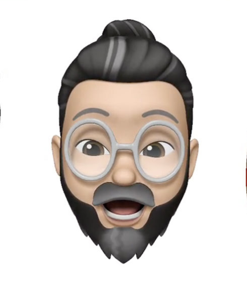
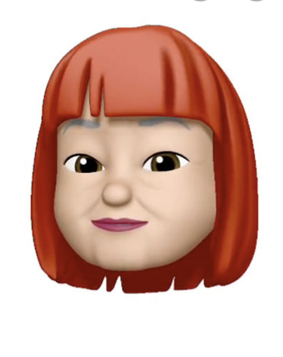

<!DOCTYPE html>
<html>

<head>
    <link href="https://fonts.googleapis.com/css?family=Acme|Advent+Pro|Caveat|Coda+Caption:800|Fredoka+One|Indie+Flower|Knewave|Lacquer|Permanent+Marker|Rajdhani|Source+Code+Pro|Squada+One&display=swap" rel="stylesheet">
    <script src="jquery.js"></script>
    <script src="data_generator.js"></script>
</head>

<body>
    <script>
    $(document).ready(function home() {
        // global variables
        let $body = $('body');
        let homeButton = $('<br><br><button>Back To Twiddler Feed</button>'); 
        let moreUserTweetsButton;
        let $tweet = $('<div></div>'); 
             
        //Reusable Functions
        let x = window.matchMedia("(max-width: 900px)");
        function mediaQuery(x) {
            if (x.matches) { // If x matches
                $(".wholetweet").css("font-size", ".8rem");
                $(".wholetweet").css("width", "25vw");
                $(".wholetweet").css("margin-left", "12.5vw");
                $(".tweettime").css("font-size", ".8rem");
                $(".people").css('width', '40px');
                $(".people").css('height', '40px');
                $(moreButton).css('font-size', '.9rem');
            } else {
                $(".wholetweet").css("font-size", "1rem");
                $(".wholetweet").css("width", "30vw");
                $(".wholetweet").css("margin-left", "10vw");
                $(".tweettime").css("font-size", "1rem");
                $(".people").css('width', '50px');
                $(".people").css('height', '50px');
                $(moreButton).css('font-size', '1.2rem');
            }
        }
        
        function appendLogo(){
            let $logo = $('');
            $logo.appendTo($body);
            $($logo).css('height', '10vh');
            $($logo).css('text-align', 'center');
        } 

        function styleTweetDivs(){
            $($tweet).css('text-align', 'center');
            $($tweet).css('background-color', 'white');
            $($tweet).css('width', '50vw');
            $($tweet).css('margin-left', '25vw');
            $($tweet).css('height', '200px');
            $($tweet).css('margin-top', '3vh');
            $($tweet).css('border', 'solid 2px #404040');
        }

        function stylePeopleDivs() {
            $('.people').click(() => console.log('I clicked the people'));
            $(".people").css('width', '50px');
            $(".people").css('border', 'solid 2px black');
            $(".people").css('height', '50px');
            $(".people").css('position', 'absolute');
            $(".people").css('margin-left', '-22vw');
            $(".people").css('margin-top', '40px');
            $(".people").css('float', 'left');
            $(".people").css('border-radius', '50%');
        }

        function appendHomeButton(){
            homeButton.appendTo($body);
            $(homeButton).css('font-size', '1.1rem');
            $(homeButton).css('font-family', 'Coda Caption');
            $(homeButton).css('border-radius', '10px');
            $(homeButton).css('padding-left', '20px');
            $(homeButton).css('padding-right', '20px');
            $(homeButton).css('color', '#6495ED');
            $(homeButton).css('background-color', 'white');
        }

        function appendMoreUserTweetsButton(){
            moreUserTweetsButton.appendTo($body);
            $(moreUserTweetsButton).css('font-size', '1.1rem');
            $(moreUserTweetsButton).css('font-family', 'Coda Caption');
            $(moreUserTweetsButton).css('border-radius', '10px');
            $(moreUserTweetsButton).css('padding-left', '20px');
            $(moreUserTweetsButton).css('padding-right', '20px');
            $(moreUserTweetsButton).css('color', '#404040');
            $(moreUserTweetsButton).css('background-color', 'white');
        }

        // clear html from body
        $body.html('');
        $($body).css('text-align', 'center');
        $($body).css('background-color', '#5DA7FE');
        $($body).css('font-family', 'Source Code Pro');

        appendLogo();

        // create and style moretweets button
        const moreButton = $('<br><br><button>Get More Twiddles</button>');
        $(moreButton).css('font-size', '1.2rem');
        moreButton.appendTo($body);
        $(moreButton).css('font-family', 'Coda Caption');
        $(moreButton).css('border-radius', '10px');
        $(moreButton).css('padding', '8px');
        $(moreButton).css('width', '30vw');
        $(moreButton).css('color', '#5DA7FE');
        $(moreButton).css('background-color', 'white');
        $(moreButton).click(() => { home() }); 

        //loop through tweets in data generator, style and append to DOM
        let index = streams.home.length - 1;

        while (index >= 0) {

            let tweet = streams.home[index];
            $tweet = $('<div></div>');
            let image = '<br><br><br>';

            switch (tweet.user) {
                case 'douglascalhoun':
                    image = '<br><br><br>';
                    break;
                case 'shawndrost':
                    image = '<br><br><br>';
                    break;
                case 'mracus':
                    image = '<br><br><br>';
                    break;
                case 'sharksforcheap':
                    image = '<br><br><br>';
                    break;

            }

            styleTweetDivs();

            let fullTime = tweet.created_at.toString();
            let time = fullTime.replace('GMT-0500 (Eastern Standard Time)', 'EST');
            $($tweet).html(`<p class ="wholetweet"  style = 'margin-top: -1vh; width:30vw; margin-left:10vw;'> @ <span style="color:blue; cursor:pointer" class ="${tweet.user}">${tweet.user}</span> : ${tweet.message} </p>`);
            $(image).prependTo($tweet);
            $($tweet).append("<p style='margin-top: 0vh;' class='tweettime'>" + time + "</p>");
            $tweet.appendTo($body);
            index -= 1;

        }

        stylePeopleDivs();
        mediaQuery(x) // Call listener function at run time
        x.addListener(mediaQuery) // Attach listener function on state changes

        //clicked on class!
        let doug1 = document.getElementsByClassName('douglascalhoun');

        $(doug1).click(function moreDoug() {

            $body.html('');
            appendLogo();
            appendHomeButton();
            moreUserTweetsButton = $('<br><br><button>More Twiddles From Douglas</button>');            
            appendMoreUserTweetsButton();

            let index = streams.users.douglascalhoun.length - 1;

            while (index >= 0) {

                let tweet = streams.users.douglascalhoun[index];
                $tweet = $('<div></div>');
                let image = '<br><br><br>';

                if(tweet.user === 'douglascalhoun') {
                    image = '<br><br><br>';        
                }

                styleTweetDivs();

                let fullTime = tweet.created_at.toString();
                let time = fullTime.replace('GMT-0500 (Eastern Standard Time)', 'EST');
                $tweet.html(`<p class ="wholetweet" style = 'margin-top: -1vh; width:30vw; margin-left:10vw;'> @ <span style="color:blue; cursor:pointer" class ="${tweet.user}">${tweet.user}</span> : ${tweet.message} </p>`);
                $(image).prependTo($tweet);
                $($tweet).append("<p style='margin-top: 0vh;' class='tweettime'>" + time + "</p>");
                $tweet.appendTo($body); 
                index -= 1;

            }

            stylePeopleDivs();

            $(moreUserTweetsButton).click(() => { moreDoug() });
            $(homeButton).click(() => { home() });
            let doug1 = document.getElementsByClassName('douglascalhoun');
            $(doug1).click(() => { moreDoug() });

            mediaQuery(x) // Call listener function at run time
            x.addListener(mediaQuery) // Attach listener function on state changes

        });


        //clicked on class!
        let shark1 = document.getElementsByClassName('sharksforcheap');

        $(shark1).click(function moreSharks() {

            $body.html('');
            appendLogo();
            appendHomeButton();
            moreUserTweetsButton = $('<br><br><button>More Twiddles From Sharks</button>');
            appendMoreUserTweetsButton();

            let index = streams.users.sharksforcheap.length - 1;

            while (index >= 0) {

                let tweet = streams.users.sharksforcheap[index];
                $tweet = $('<div></div>');
                let image = '<br><br><br>';

                if(tweet.user === 'sharksforcheap') {
                    image = '<br><br><br>';
                }

                styleTweetDivs();

                let fullTime = tweet.created_at.toString();
                let time = fullTime.replace('GMT-0500 (Eastern Standard Time)', 'EST');
                $tweet.html(`<p class ="wholetweet" style = 'margin-top: -1vh; width:30vw; margin-left:10vw;'> @ <span style="color:blue; cursor:pointer" class ="${tweet.user}">${tweet.user}</span> : ${tweet.message} </p>`);
                $(image).prependTo($tweet);
                $($tweet).append("<p style='margin-top: 0vh;' class='tweettime'>" + time + "</p>");
                $tweet.appendTo($body);
                index -= 1;

            }

            stylePeopleDivs();

            $(moreUserTweetsButton).click(() => { moreSharks() });
            $(homeButton).click(() => { home() });
            let shark1 = document.getElementsByClassName('sharksforcheap');
            $(shark1).click(() => { moreSharks() });

            mediaQuery(x) // Call listener function at run time
            x.addListener(mediaQuery) // Attach listener function on state changes

        });

        //clicked on class!
        let shawn1 = document.getElementsByClassName('shawndrost');

        $(shawn1).click(function moreShawn() {
   
            $body.html('');
            appendLogo();
            appendHomeButton();
            moreUserTweetsButton = $('<br><br><button>More Twiddles From Shawn</button>');
            appendMoreUserTweetsButton();

            let index = streams.users.shawndrost.length - 1;

            while (index >= 0) {

                let tweet = streams.users.shawndrost[index];
                $tweet = $('<div></div>');
                let image = '<br><br><br>';

                if(tweet.user === 'shawndrost') {
                    image = '<br><br><br>';
                }

                styleTweetDivs();

                let fullTime = tweet.created_at.toString();
                let time = fullTime.replace('GMT-0500 (Eastern Standard Time)', 'EST');
                $tweet.html(`<p class ="wholetweet" style = 'margin-top: -1vh; width:30vw; margin-left:10vw;'> @ <span style="color:blue; cursor:pointer" class ="${tweet.user}">${tweet.user}</span> : ${tweet.message} </p>`);
                $(image).prependTo($tweet);
                $($tweet).append("<p style='margin-top: 0vh;' class='tweettime'>" + time + "</p>");
                $tweet.appendTo($body);
                index -= 1;

            }

            stylePeopleDivs();

            $(moreUserTweetsButton).click(() => { moreShawn() });
            $(homeButton).click(() => { home() });
            let shawn1 = document.getElementsByClassName('shawndrost');
            $(shawn1).click(() => { moreShawn() });

            mediaQuery(x) // Call listener function at run time
            x.addListener(mediaQuery) // Attach listener function on state changes

        });

        //clicked on class!
        let mracus1 = document.getElementsByClassName('mracus');

        $(mracus1).click(function moreMracus() {

            $body.html('');
            appendLogo();
            appendHomeButton();
            moreUserTweetsButton = $('<br><br><button>More Twiddles From Mracus</button>');     
            appendMoreUserTweetsButton();

            let index = streams.users.mracus.length - 1;

            while (index >= 0) {

                let tweet = streams.users.mracus[index];
                $tweet = $('<div></div>');
                let image = '<br><br><br>';

                if(tweet.user === 'mracus') {
                    image = '<br><br><br>';
                }

                styleTweetDivs();

                let fullTime = tweet.created_at.toString();
                let time = fullTime.replace('GMT-0500 (Eastern Standard Time)', 'EST');
                $tweet.html(`<p class ="wholetweet" style = 'margin-top: -1vh; width:30vw; margin-left:10vw;'> @ <span style="color:blue; cursor:pointer" class ="${tweet.user}">${tweet.user}</span> : ${tweet.message} </p>`);
                $(image).prependTo($tweet);
                $($tweet).append("<p style='margin-top: 0vh;' class='tweettime'>" + time + "</p>");
                $tweet.appendTo($body);
                index -= 1;

            }

            stylePeopleDivs();

            $(moreUserTweetsButton).click(() => { moreMracus() });
            $(homeButton).click(() => { home() });
            let mracus1 = document.getElementsByClassName('mracus');
            $(mracus1).click(() => { moreMracus() });

            mediaQuery(x) // Call listener function at run time
            x.addListener(mediaQuery) // Attach listener function on state changes

        });

    });
    </script>
</body>

</html>